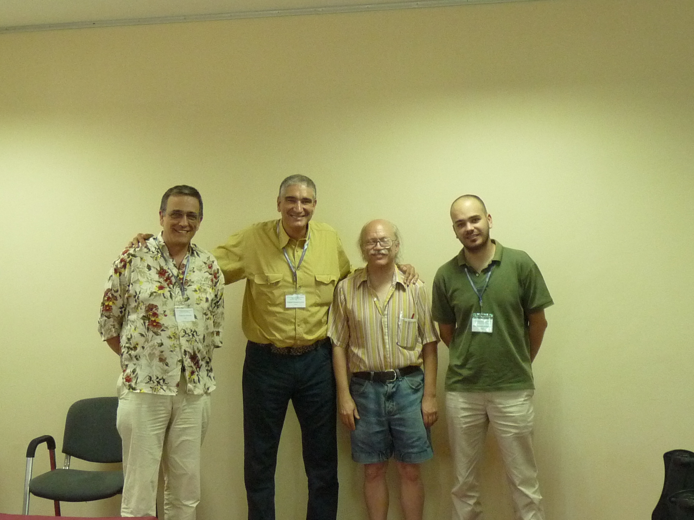
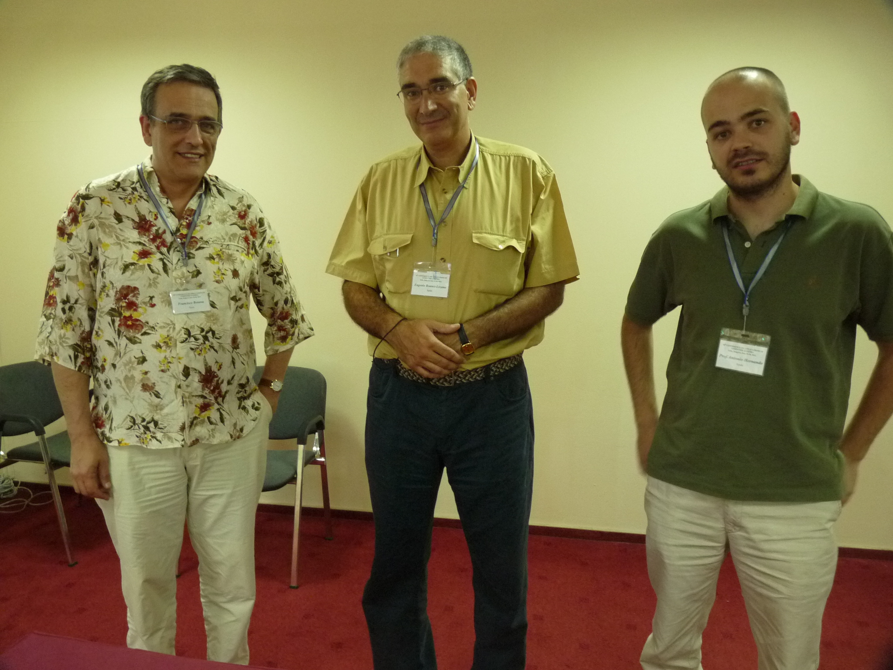
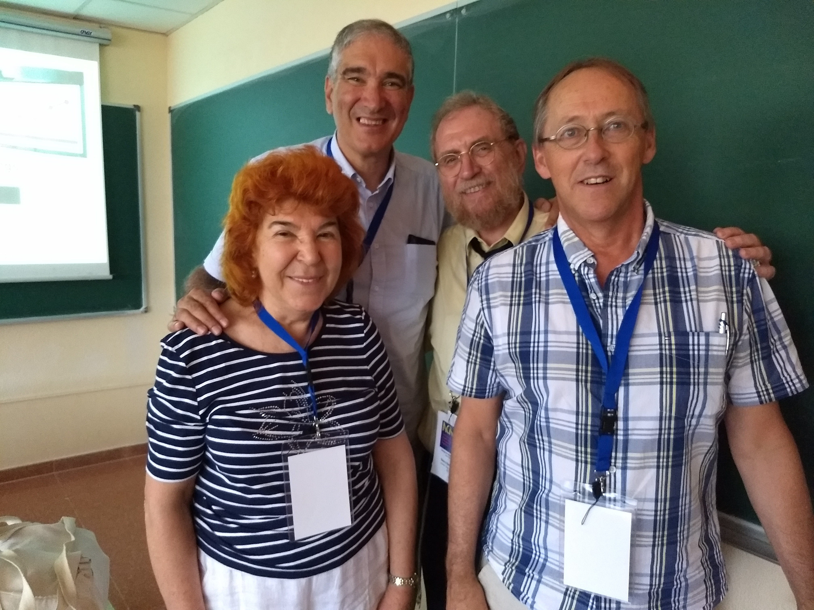
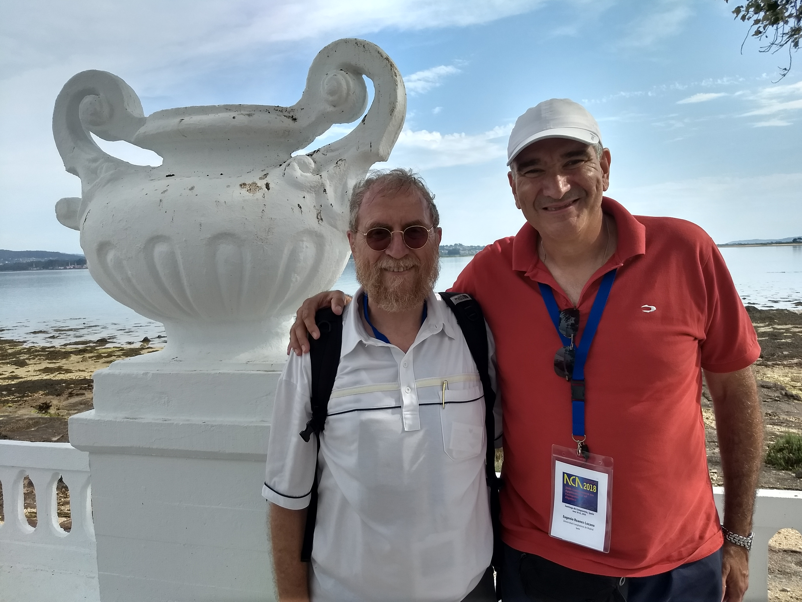
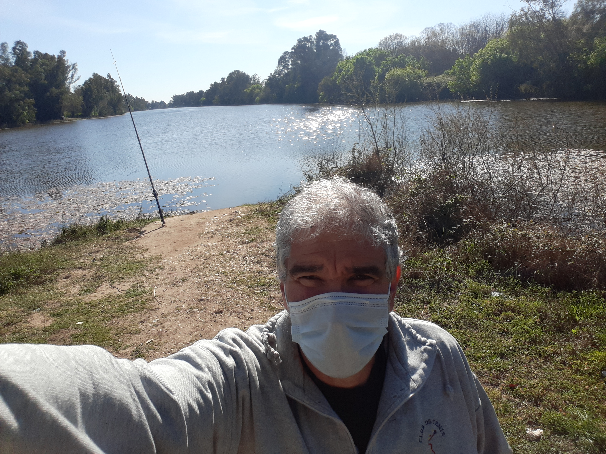
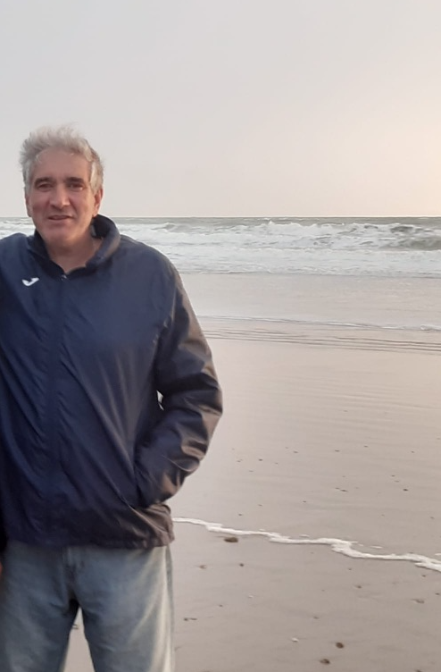
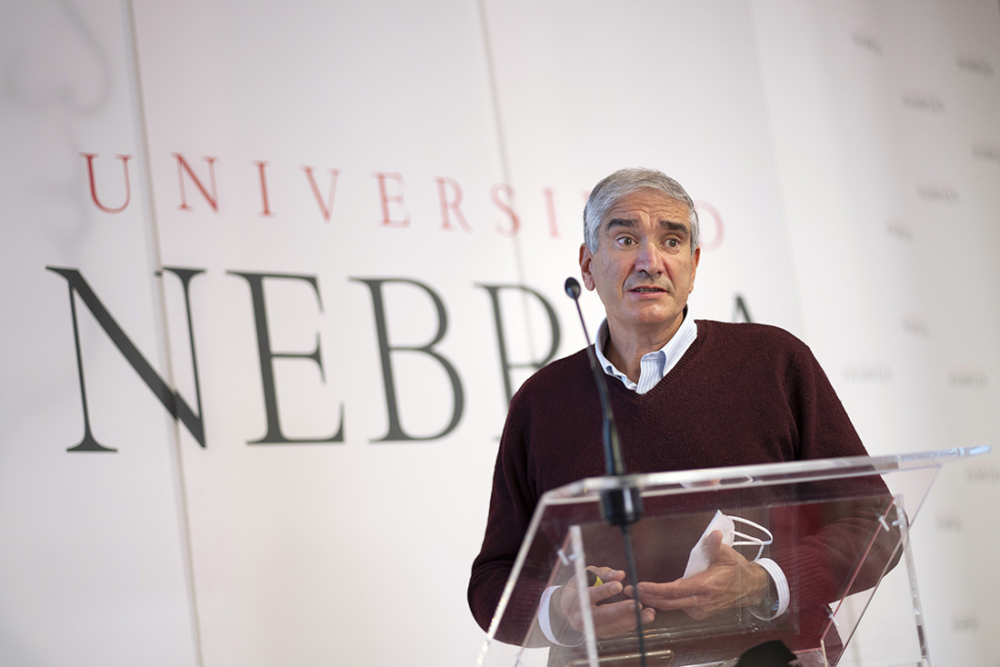
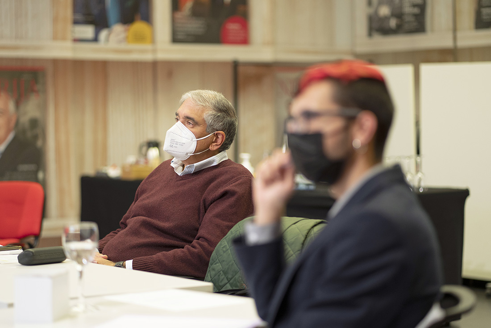
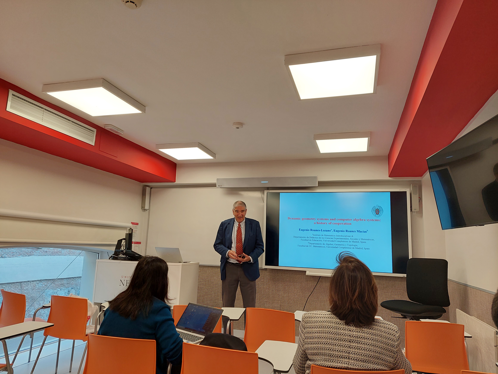
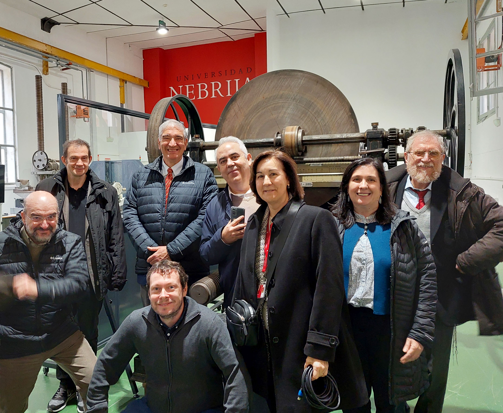

Obituary published in the Bulletin of the Royal Spanish Mathematical Society (Real Sociedad Matemática Española), No. 800, pp. 6-7, April 21st, 2023, https://www.rsme.es/wp-content/uploads/2023/04/Boletin-800.pdf; English translation by Tomas Recio.
I first met Eugenio in 1995 when he came to the first ACA in Albuquerque, New Mexico. He introduced himself in the midst of conference craziness during which I met many new people all at once and then a second time a day or so later, this time making a very strong impression (he wanted to make sure I hadn't forgotten him!). This was the start of a strong friendship and collaboration.
Eugenio was the first attendee of an ACA that Stan and I had not previously met who became an organizer himself (El Escorial, 1999). This conference was a chance to practice my Spanish, and indeed, every time I saw Eugenio subsequently, we would practice a few words on each other, although Eugenio's English was far superior to my Spanish! The El Escorial conference was a smashing success.
Eugenio started the series of sessions on Nonstandard Applications of Computer Algebra, as he was interested in a large variety of non-traditional mathematical applications, such as anything to do with trains (he loved trains and railroads), tennis (a sport he enjoyed and excelled in), etc. Indeed, I became involved with Eugenio as both a coauthor (in a couple of papers related to railroad network topology) and co-organizer (of 9 of the Nonstandard sessions). Eugenio was always very organized and a delight to work with.
After 10 years of Stan as chair of the ACA Working Group, he asked Eugenio to take over. Eugenio was chair for another 10 years (until 2016), when I took over. Eugenio was also for 3 years a member of the committee that decided on the ERA (Early Researcher Award) winners.
I have several lovely books on Spain and a baseball cap decorated with the Spanish flag given to me by Eugenio---he was always generous with his friends. At ACA'2004 in Beaumont, Texas, I hooked up with Eugenio the day before the conference and after eating lunch at the Texas Star Bar & Grill---Tootsie's Choo-Choo Diner (how could we resist a train related named place like this?), drove to the Texas border with Louisana to take a swamp tour together on the Sabine River. Our guide had a degree in biology and could speak Spanish when needed for clarification. In the 1.5 hour tour, we saw alligators, snowy egrets, herons, eagles, lillies, a leaf tunnel eco-environment and a drydock graveyard from World War II containing remnants of ship lifters. It was a whole lot of fun and very educational. That evening we had dinner with Hoon Hong and Bill Pletsch. It was a great day. I will really miss the big guy.
--- Michael J. Wester
         
Go to:
Conferences on Applications of Computer
Algebra main page